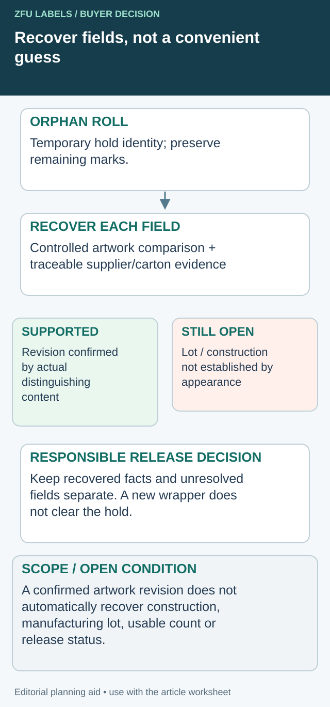

The outer carton correctly lists every flavor. Once it is opened, the rolls look nearly identical and the carton is discarded. The operator is left to distinguish a small ingredient change or barcode from a thumbnail view of the front design.
Specify identification at the level that remains with the material. For mixed-SKU deliveries, that usually means an agreed identity on each roll or its retained protective unit, linked to a clear packing list. An accurate outer carton cannot control material that becomes anonymous after unpacking.

Recover the supported identity without manufacturing a history
A missing wrapper does not make the roll useless for every inquiry, but it breaks a link that appearance alone may not restore. Assign a temporary hold identity under the actual stock procedure, then record each recovered field and its evidence. A provisional internal reference is not an original supplier roll number.


| Identity field | Potential evidence to examine | Limit to preserve |
|---|---|---|
| Product/component | Visible content checked against controlled artwork | A front design may not identify its exact back-panel pair |
| Artwork revision | Distinguishing approved text/code and file comparison | Similar appearance or filename memory is insufficient |
| Construction | Remaining supplier marks and reconciled supply record | White film appearance does not prove exact stock |
| Supplier lot/roll | Traceable carton/packing relationship or supplier clarification | Do not infer a manufacturing lot solely from the consumer GTIN |
| Quantity/status | Actual count basis and release/hold record | An identified item can still have unknown quantity or open release |
Keep two different recovery outcomes
In a hypothetical two-revision delivery, the visible label matches a distinctive current text change. That can support an artwork comparison if the responsible reviewer confirms it. It may still leave the manufacturing lot unknown because both supplied batches used that same revision. Keep the recovered revision and missing lot as separate states.
Ask the supplier whether retained carton marks, roll arrangement or production records can establish the missing relationship. Record its actual response and the reviewed basis. Do not reconstruct the original carton solely from a recollection that the red rolls were probably on the left.
If a final material decision is required before all fields are recovered, refer the remaining gap and intended use to the responsible quality owner. This article does not authorize release based on a recognizable design. A physically present roll with uncertain traceability should not silently become unrestricted inventory when a new wrapper is attached.
Use the incident to test the next packaging specification. Ask whether the agreed identity carrier survives unpacking and partial return without interfering with safe equipment use. Better inner identification adds marking and handling work, but it addresses the actual failure: the material must remain identifiable after the outer carton is gone.
Decide what can be mixed
Ask whether the supplier proposes one SKU per carton, several separated SKUs or a consolidated small-order pack. Each arrangement can be workable if the receiving and picking process can preserve the identities. Do not require single-SKU cartons by habit when a well-separated small shipment would serve the job, and do not accept loose mixed rolls when the line cannot identify them reliably.
Consider artwork revision and label component as well as flavor. A front and back label with similar dimensions may need different application stations. Two rolls for the same product can still belong to different approved versions or constructions.
The SKU quantity guide reconciles counts. This identification task makes those quantities traceable after cartons and rolls are separated.
Define the minimum roll identity
Choose fields that distinguish the material for the actual operation: SKU or item code, product description, artwork revision, component, supplier lot/roll reference and quantity basis. Add the construction reference where needed for the release process. Ask the supplier which fields it can provide and how they will remain readable.
Do not rely on a color cue alone. Color may help a picker, but variants can share a palette and later revisions can change it. A human-readable identity should still make sense without a camera, scanner or memory of the design meeting.
If machine-readable identification is proposed, agree the data meaning and system use. A warehouse roll code is not necessarily the consumer-product GTIN printed within the label artwork. Keep those identifiers distinct so scanning does not create a false sense of control.
Use an identification hierarchy
| Level | Identity to preserve | Check at the next handoff |
|---|---|---|
| Shipment | Delivery and master packing list | All cartons belong to the expected order |
| Carton | Carton number and included roll list | Contents agree with the carton record |
| Inner group | SKU/component segregation | Unpacking does not mix unlike material |
| Roll | Item, revision, lot/roll and quantity | Picker can identify the roll independently |
| Line issue | Authorized run and component | Issued roll matches the released job |
| Partial return | Remaining identity and status | Returned stock can be picked safely later |
The hierarchy is an editorial model for a receiving process, not a prescribed label standard. Adapt it to the equipment and stock-control system your supplier and packer actually use.
Make the packing list explain the physical pack
List carton and roll relationships instead of giving only a shipment total. If a carton contains several artworks, identify the quantity and location or separation arrangement clearly enough for receiving to reconcile them without unwinding every roll.
Ask how substitutions, split rolls or last-minute production balances will be shown. A roll count can change while the total piece quantity remains similar. The packing list should describe the delivered arrangement rather than copy the planned carton structure after it has changed.
Keep original supplier references when translating information into your warehouse system. An internal item code can simplify picking, but the source lot and roll reference may be needed for a later quality investigation.
Test the instruction with a realistic unpacking exercise
Use the proposed packaging and ask a person who did not prepare the order to identify a specified roll. Check what happens when the outer carton is no longer available, when the roll is partly used and when two revisions sit nearby.
A hypothetical jam range may have strawberry and apricot labels that are easy to distinguish by color, while two strawberry revisions differ only in a small text panel. The procedure must resolve both situations. It should not depend on the supplier's original packer remembering where each roll was placed.
The vintage changeover guide addresses the later line-clearance decision. Robust inner identification provides the information that procedure needs.
Keep partial rolls identifiable
Agree where the identity stays when protective wrapping is removed. If the system uses a sleeve, tag or other carrier, define how it follows the roll without creating a hazard or interfering with the applicator. The technical owner should approve the actual attachment method.
When a roll returns from the line, record its status and remaining quantity basis. A partly used roll awaiting investigation should not return to unrestricted stock simply because its flavor name is correct.
The co-packer release guide separates received, held and released stock. Include those states in the handoff rather than treat every identified roll as automatically approved for production.
Resolve an identification gap before consuming material
If the roll identity is missing or conflicts with the artwork, hold it under the applicable procedure and ask the supplier for traceable clarification. A photograph can assist comparison, but appearance alone may not establish a manufacturing lot or exact revision.
Resolve the specific label handoff
Include roll photos, remaining marks, carton/packing records and the exact identity fields still missing.
Prepare the label specification inquiry. The form opens an email draft for your review; attachments go through the listed email or WhatsApp route. Actual supply scope, pricing, samples and timing need project confirmation.
Related decisions: Incoming Label Inspection: Define the Lot Before Choosing Samples; Label Lot Traceability: Link the Roll to the Finished Packing Run; Labels Sent to a Co-Packer: Separate Receipt from Production Release